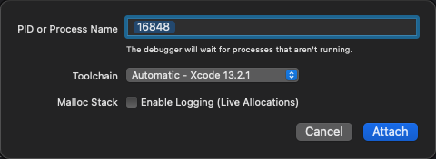
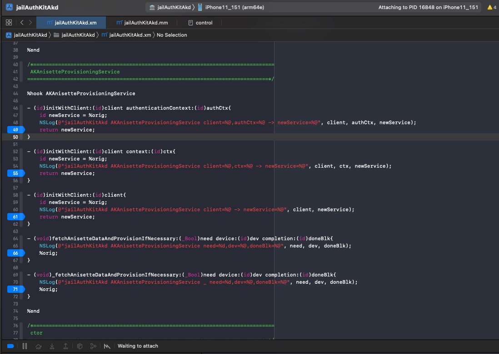
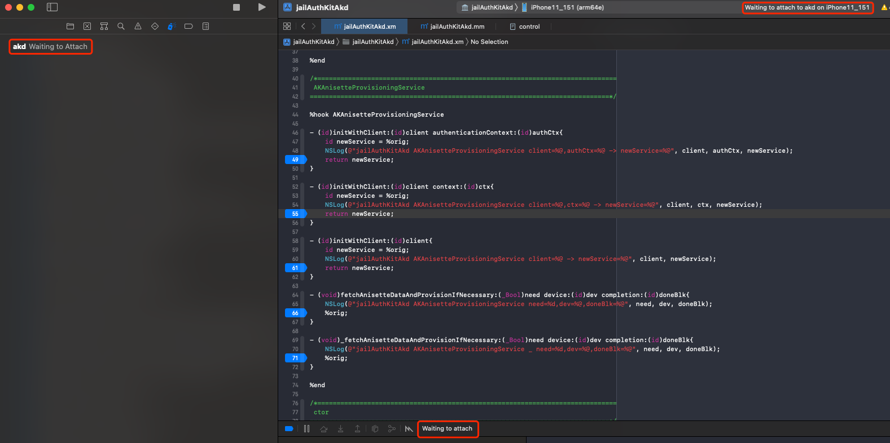
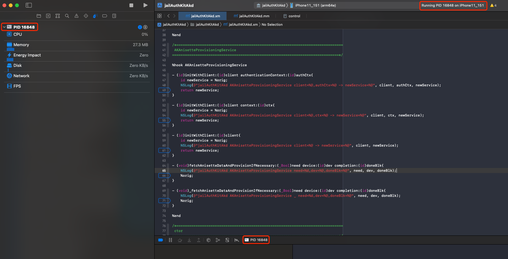

Attach调试
Xcode去Attach挂载调试app或二进制：通过PID或进程名
至此，目前还是和之前一样：
- 对于Xcode
- 去Attach调试（iOS的）
- 操作步骤：
Xcode-》Debug-》Attach to Process by PID or Name-》PID or Process Name - 调试内容：
- app=Application=应用=程序
- 结论：只能用PID，而无法用Name
- 举例
- 设置=
Preferences- 相关信息
- 包名：
com.apple.Preferences - 二进制位置：
/Applications/Preferences.app/Preferences
- 包名：
- 结论：无法通过
com.apple.Preferences或Preferences的Name去Attach调试- 只能通过（
ps -A | grep Preferences找到的）PID值，去Attach调试
- 只能通过（
- 相关信息
- 设置=
- Executables=可执行文件=binary=二进制
- 结论：可以用Name（二进制名称）
- 举例
- akd
- 二进制位置：
/System/Library/PrivateFrameworks/AuthKit.framework/akd - 结论：可以用akd直接去调试二进制
- 而无需用PID值（先用
ps查看到PID，再输入PID值）
- 而无需用PID值（先用
- 二进制位置：
- akd
- app=Application=应用=程序
- 成功调试时的现象
- PID or Process Name在输入PID值/Name后
- 图
- 

- 此处要稍等等待一会（大概几十秒）
- 图
- 然后会出现提示：
Waiting to attach- PID值/Name
- 
- 
- PID值/Name
- 再稍等一下（大概几秒），就会显示正常的提示：
- PID值/Name
- 具体现象
- 右下角：调试窗口：显示出进程PID值/Name
- 右上角：状态信息显示：
Running PID值/Name on iPhone - 左上角：Debug Navigator中显示出PID值/Name和当前硬件信息：CPU、Memory等等
- 图
- 

- 具体现象
- PID值/Name
- PID or Process Name在输入PID值/Name后
- 操作步骤：
- 去Attach调试（iOS的）